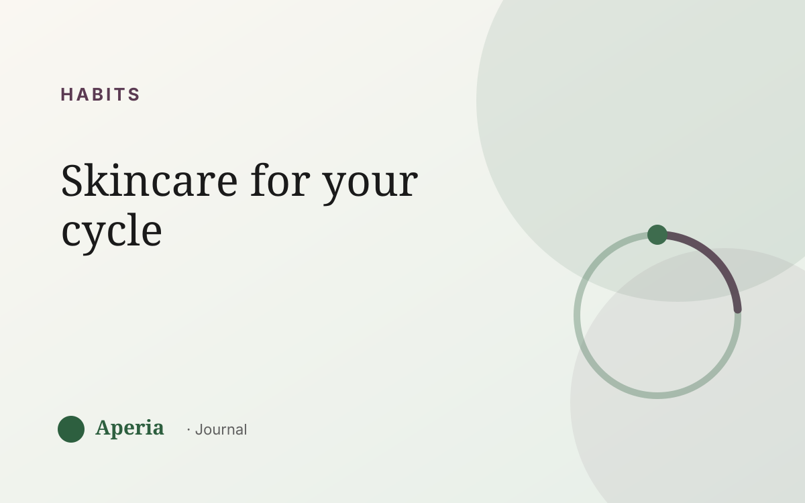

Habits
A skincare rhythm for every phase of your cycle
Your skin isn't the same on day 5 as it is on day 25, because the hormones behind it are moving in a wave. ‘Cycle syncing’ your skincare just means letting your care follow that wave instead of fighting it. It doesn't mean a different shelf of products every week — it means small, sensible adjustments and, above all, knowing what's coming.
Menstrual phase (your period)
Hormones are at their lowest and skin can feel drier, duller or more sensitive. This is a week to be gentle: hydration, comfort, nothing harsh. If your skin feels reactive, this is not the week to try an aggressive new active.
Follicular phase (after your period)
As one of the key hormones rises, a lot of people hit their skin's best stretch — calmer, clearer, more resilient. It's a good window if you ever want to introduce something new, because skin tends to tolerate it better now.
Ovulation (mid-cycle)
Skin is often at its glowiest here, though some people get a small mid-cycle bump in oil. Keep things steady; enjoy the good skin week.
The goal isn't a new routine every week. It's one steady routine, plus knowing which week to expect a flare.
Luteal phase (the flare week)
The second half, and especially the days before your period, is when skin is most likely to get oilier and break out — usually on the chin and jaw. This is the week to stay consistent, avoid picking, and not panic-buy. A flare here is expected, not a sign your routine failed.
The real secret: consistency, not overhaul
The single most useful move isn't matching a product to each phase — it's keeping a steady, gentle routine all month and knowing when your flare week lands so you can meet it calmly. Overhauling your routine the moment a spot appears is what keeps most people stuck.
Personalise it to your own skin
Everyone's wave is a little different. Aperia tracks your skin by zone alongside your cycle, so you can see your good weeks and your flare week — and time your care to the skin you actually have, not a generic calendar.
Common questions
What is cycle syncing skincare?
It's the idea of letting your skincare follow the natural changes in your skin across your menstrual cycle — being gentle during your period, and steady and prepared during your flare week — rather than treating every day the same.
Do I need different products for each week?
No. The most useful version is one consistent, gentle routine kept up all month, plus knowing which week your skin tends to flare so you can anticipate it. Small tweaks are optional; consistency matters more.
When is skin usually worst in the cycle?
For most people the week before their period — the late luteal phase — is when skin gets oiliest and most likely to break out, often on the chin and jaw.
Does cycle syncing skincare actually work?
The clearest benefit is timing and mindset: when you know a flare is coming, you stop overreacting and keep your routine steady, which usually serves skin better than constant switching. Tracking your own cycle is how you make it real rather than generic.
See your own skin pattern
Track your skin and your cycle together. Free to start.
Download on the App StoreAperia is a self-knowledge tool, not a medical service. It helps you understand and track your skin; it doesn't diagnose, treat or cure anything. If you're concerned about your skin, talk to a qualified professional.